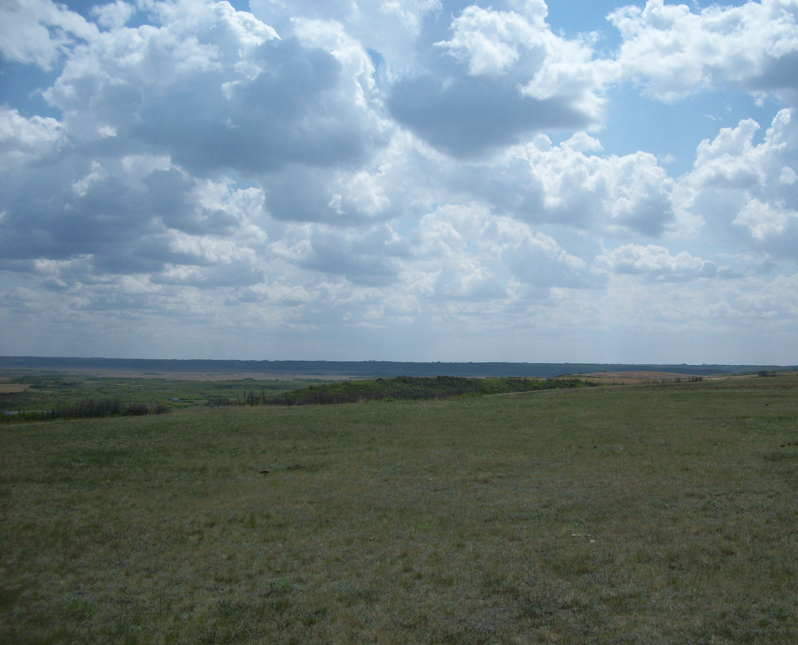

By Pat Johnstone, Arthur LeDoux and Leona Daniels
|  |
|
Overlooking Cut Knife Hill |
When chief Mistawasis entered into treaty, the parcel of the land that was allotted was selected because it contained good timber and good farmland with abundant wildlife, Chief Mistawasis understood that entering into treaty and selecting his reserve did not limit his peoples freedom of movement on and off the reserves he had selected. It was to be land that would always be there for the use of his Band members, but never was it understood that this would be a place where his people would be confine. The parcel of land that was selected was quite large (see map). Indeed, the initial allotment extended south and east to the place where the town of Leask is presently located, fully four miles father south than the present southern boundary and five miles farther east than the present eastern line. The initial allotment joined the neighbouring Muskeg Lake Reserve.
Today the two reserves are considerably smaller, there is now eight miles separating them (see map). The stories surrounding the surrender of land from the initial allotment are well known by many of the Mistawasis people. Part of the reserve was surrendered to the railway to provide right of way for this new transportation link. Another part of the initial allotment was surrendered to the Federal Government to provide the land for the returning World War 1 veterans.
Under the Soldier Settlement Act in 1919, each returning veteran was entitled to receive land to settle on after he returned from war. This second surrender from the Mistawasis Band to the Government of Canada was to provide land for these returning men. It should be noted that Indian veterans were not granted any of this surrendered land r any other crown land to settle upon. They were given a parcel of land from their home reserve that was not surrendered. The surrender of land to the crown involved the Indian people of Mistawasis giving up on all rights and privileges to a large portion of the southern part of their reserve in exchange for a certain amount of money.
The amount of money, consisting of between eight and ten dollars per acre was described as a premium price by government officials. The Band membership was generally not of the same opinion since they never received the full amount of money that they were promised. One of the conditions of the surrender was that a fence with gates that could be locked was to be built around the reserve which now extended six miles by eight miles, and the cost of this fence and gates was taken out of the proceeds of the land surrender. This was done without the approval of the Band. The fence itself was to be constructed from heavy page wire, the kind that was used to fence the railway right of way. It is interesting to note that even today, 71 years later, portions of that fence remain. There were two gates built into the fence, they were closed and locked at night and there were gatekeepers assigned to each gate. There gatekeepers were hired from the Mistawasis Band membership by the farm instructor and paid b the agency. Old Norbert LeDoux was the first gate keeper at the south gate. He lived quite close to the gate and it was convenient for him to keep a close watch to make sure that no one entered or left unless they were properly authorized.
The man who is known as Old Wahpasoos was the first guard of the north gate. During WW1 George Dreaver was Chief of the Mistawasis Band. He had three sons who enlisted in the army. Frank who was killed in action at the Vimy Ridge April 5th, 1917, Joseph who was awarded the Military Medal at Vimy Ridge and William. They were all in the 5th battalion, CEF. There is a copy of a telegram in the archives in which W. F. Dreaver sent on behalf of the soldiers from Mistawasis indicating that no sale of land be undertaken. Other band members from Mistawasis who enlisted were Alex Black, George and Norman Sanderson and Alex Bigman.
Although many years have passed since the surrender, there remains to this day considerable misgiving in the Mistawasis community surrounding not only the incidents leading up the sale, but also around the actual signing of the surrendered documents. Band members remember that after the signing there was much discussion and many questioned why it was that only three of those representing the Band at the signing of the surrender actually wrote their names and rest made an “X”. It seems all the “X”’s looked identical and there is some question where some of them might have been forged.
One story that is always remembered when Band memebers atalk about the land surrender involves the relocation of one of their members as a result of the surrender. It is the story of Soloman Johnston. Before the surrender of land to the Soldiers Settlement Board, around 1919, Soloman was living on the very southern part of the reserve on the north side of the old slough. He had some livestock with a house and a barn. He had some land that he had cultivated as well. Sol Johnston was away working when his wife was told of the sale of the land. When he returned there was only a matter of hours left to leave their home and property. On this short notice Soloman managed to take his cattle and basic items that could be taken by team to the unsold portion of the reserve.
Other families who had to move were Muchoohoo and Louis Watson. Watson had pinto ponies he had obtained from Alberta. He raised them near a lake area on the west side. These families were severely affected by the sale of Mistawasis land. They were resourceful and hard-working people who later became successful and self-supporting. John LeDoux was for many years a member of the Mistawasis Band Council. Joe Dreaver served many years as chief of the reserve.
A similar story if often told about Jean LeDoux. He was somewhat more fortunate in some ways. Jean too, was given only hours to move off the surrendered parcel of land. Fortunately he had enough green logs and rails (very small logs often used for making corral fence) to erect a makeshift shelter for himself and his family. His cattle had to keep warm in straw piles because he had no barn. He also had to relocate all of the hay that he had already put up. He had to leave his house, barn and outbuildings that had taken him years to build John and Jean LeDoux had been educated in a seminary. Joe Dreaver and Soloman attended industrial Schools.
It is the to be noted that many of these educated people did not agree with the sale of the land because our culture decreed you do not disagree with the decision of the elders and leaders and also because they were unable to present their arguments against the sale. In 1935, George Dreaver was still chief, his son Joseph performed most of the duties. Joseph Dreaver, John LeDoux and William Favel sued the crown for misuse of Band funds (proceeds from the sale of the land). The farm instructor and the Department of Indian Affairs made decisions on how the money was to be spent. Funds were used for educational and medical costs for Mistawasis members which was contrary to our interpretation of Treaty 6. These funds were also used to purchase fencing material, cattle and building materal who the Band did not authorize. The farmer instructor also raised cattle for this personal benefit. The Exchequer Court with Justice Angus in charge ruled in favor of the Mistawasis Band and we were awarded in excess of $26,000. Our lawyer was Winona Mulcaster who later helped Allan Sapp gain an international reputation as an artist. (as told to Gordon Lobe)